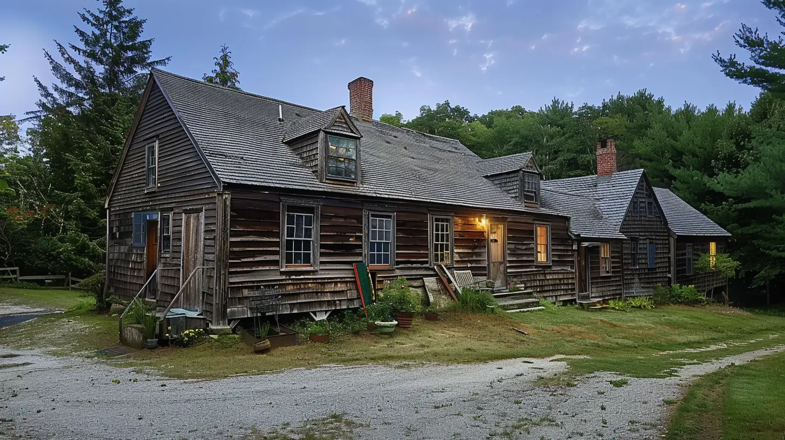

Peaceful Imagery
👻 The Conjuring House – Where Darkness Lingers Deep in the quiet woods of Harrisville, Rhode Island, stands a farmhouse older than America itself. Built in 1736, its walls whisper secrets of centuries past, but not all the voices are of the living. By day, the home looks like any other rural New England farmhouse—but when night falls, shadows twist, floors creak with unseen footsteps, and icy drafts carry the scent of something long dead. The Perron family once lived here, tormented by spirits that turned their dreams into nightmares. They told of doors slamming on their own, whispers echoing through empty rooms, and the ghastly figure of Bathsheba Sherman, a woman accused of witchcraft, glaring at them from the dark. Paranormal investigators Ed and Lorraine Warren braved its halls, documenting the terrors that later inspired The Conjuring film. But the movie was only a glimpse—what lurks in this house cannot be fully captured on screen. Visitors today speak of voices calling their names, unseen hands tugging at their clothes, and eyes watching from the shadows. Step inside, if you dare. The Conjuring House does not welcome guests—it keeps them.